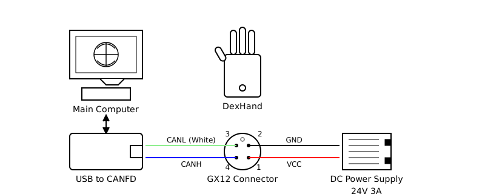

Quickstart Guide
This guide will help you get started with the DexHand Python Interface.
Overview
The DexHand Python Interface provides:
CANFD communication interface for DexHand hardware
Joint-space control interface with feedback processing
Built-in data logging and visualization tools
ROS2 interface implementation
Hardware testing utilities
Prerequisites
Linux environment
Python 3.8+
ZLG USBCANFD adapter (tested with USBCANFD-200U)
ROS1/ROS2 (optional, for ROS interface)
Hardware Setup
Please refer to the hardware connection diagram:
Installation
Install the package:
pip install -e .
Configure USB permissions:
sudo ./tools/setup_usb_can.sh
The setup script will:
Create a canbus group
Add your user to the group
Set up udev rules for the USBCANFD adapter
Configure appropriate permissions
You may need to log out and back in for the changes to take effect.
Edit
config/config.yamlto match your hardware setup, especially channels and ZCAN device type.
Usage Examples
1. Hardware Testing
Run hardware tests to verify your setup:
python tools/hardware_test/test_dexhand.py --hands right
This should move the hand through a series of predefined motions.
2. Interactive Testing
Launch interactive control interface:
python tools/hardware_test/test_dexhand_interactive.py --hands right
This provides an IPython shell with initialized hand objects. Example commands:
# Move individual joints
right_hand.move_joints(th_rot=30) # Rotate thumb
right_hand.move_joints(ff_mcp=60, ff_dip=60) # Curl index finger
right_hand.move_joints(ff_spr=20, control_mode=ControlMode.PROTECT_HALL_POSITION) # Spread fingers
# Get feedback
right_hand.get_feedback()
# Reset and clear errors
right_hand.reset_joints()
right_hand.clear_errors()
You can explore the API with tab completion and help commands.
3. ROS Integration
The SDK provides a ROS interface supporting both ROS1 (rospy) and ROS2 (rclpy) environments.
Start the ROS node:
# Launch node with default configuration
python examples/ros_node/dexhand_ros.py
# Run the demo publisher
python examples/ros_node/dexhand_ros_publisher_demo.py --hands right --cycle-time 3.0
Interface
Topics:
Services:
Service |
Type |
Description |
|---|---|---|
/reset_hands |
std_srvs/Trigger |
Reset hands to default position |
Notes:
Joint names in commands match the URDF file specifications
Configuration can be customized through
config/config.yamlAll features work identically in both ROS1 and ROS2 environments
4. Programming Interface
Example code:
from pyzlg_dexhand import LeftDexHand, RightDexHand, ControlMode
# Initialize hand
hand = RightDexHand()
hand.init()
# Move thumb
hand.move_joints(
th_rot=30, # Thumb rotation (0-150 degrees)
th_mcp=45, # Thumb MCP flexion (0-90 degrees)
th_dip=45, # Thumb coupled distal flexion
control_mode=ControlMode.CASCADED_PID
)
# Get feedback
feedback = hand.get_feedback()
print(f"Thumb angle: {feedback.joints['th_rot'].angle}")
print(f"Tactile force: {feedback.tactile['th'].normal_force}")
Control Modes
CASCADED_PID: Provides precise position control with higher stiffnessPROTECT_HALL_POSITION: Offers smoother response but requires joints to be in zero position at power-on
Error Handling
When a finger’s motion is obstructed by an object, it may enter an error state and become unresponsive to control signals. For reliable continuous control, call hand.clear_errors() after sending each command.
Data Logging
Built-in logging for analysis and debugging:
from pyzlg_dexhand import DexHandLogger
# Initialize logger
logger = DexHandLogger()
# Log commands and feedback
logger.log_command(command_type, joint_commands, control_mode, hand)
logger.log_feedback(feedback_data, hand)
# Generate analysis
logger.plot_session(show=True, save=True)
Logs include:
Joint commands and feedback
Tactile sensor data
Error states
Timing information
Next Steps
Review the API documentation for detailed interface information
Check out the examples directory for more usage examples
See the hardware test scripts for automated testing approaches